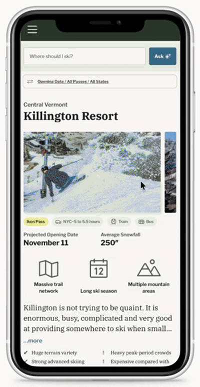
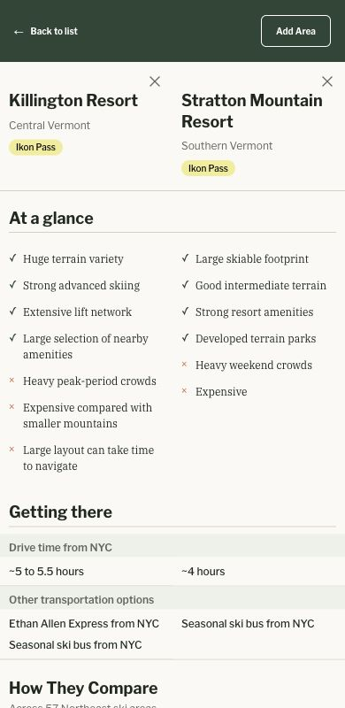
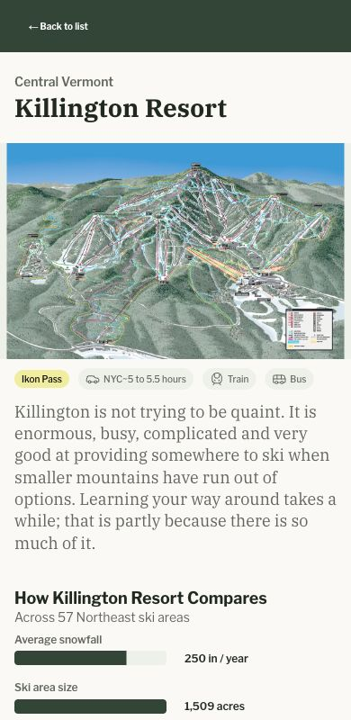
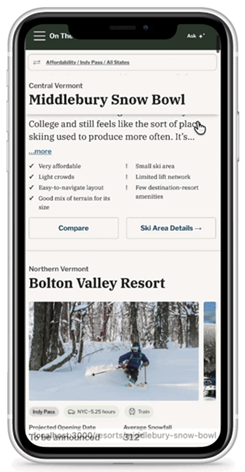

On the Traverse / Case study
The AI interprets the request. The catalog decides the answer.

01 / Summary
Independent project · Pre-launch · Product design and development
Next.js · TypeScript · Google Sheets · OpenAI. I owned the product, design, data structure, and implementation, with editorial help from a writer and journalist.
02 / Problem
The Northeast has many mountains. Bigger isn’t always better for a particular trip: terrain, travel time, atmosphere, and the people you’re skiing with all change what makes a mountain a good fit.
03 / What we learned
Skiers don’t think in filters. They describe a trip: “good après, close to Saratoga.” The product needs to translate that intent without making people learn its data model.
04 / Key decision
I rejected letting the model recommend mountains from memory. Instead, the model translates a request into supported criteria. Application code applies those criteria to the catalog, ranks eligible mountains, and explains each recommendation using matched attributes.
My AI search workflow / From a skier’s question to a mountain shortlist
- Describe the ideal ski day
- Interpret preferences with AI
- Check required criteria against resort data
- Rank eligible mountains with application rules
- Explain the matches
AI interprets what the skier wants. Application rules determine which mountains qualify and how they rank; the interface explains the results and data limitations.
05 / Design
Explore

Compare

Details

Illustrative query


06 / Outcome
The catalog covers mountains across New York and Vermont. Feedback from 16 testers described the experience as easy to read and inviting, and said it helped them discover unfamiliar mountains.
This is early feedback, not validation. The product is pre-launch. Recommendation accuracy, usability across the full journey, and sustained use have not been established.
07 / Reflection
Good recommendations start with good data. A polished answer cannot compensate for inconsistent facts, subjective ratings presented as measurements, or missing information.
Next I would validate whether skiers understand why a recommendation matches, whether unsupported requests and unknown facts are clear, and whether they can compare and return to browsing without losing context.